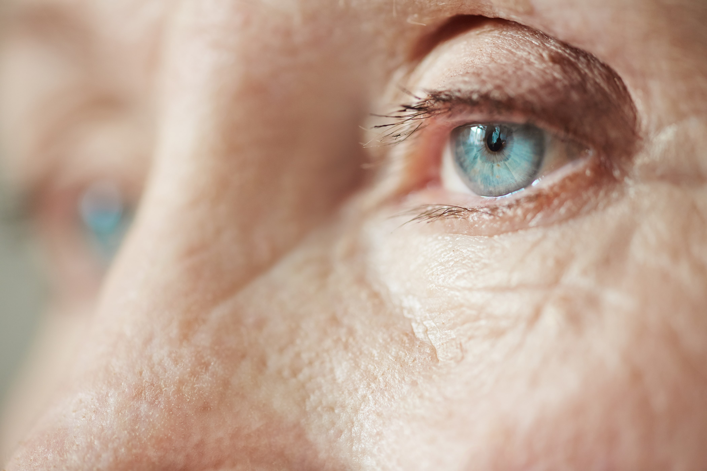

Tips Menjaga Kesehatan Mata di Era Digital
Penggunaan gadget berlebihan dapat menyebabkan gangguan mata.
Dampak Buruk Terlalu Lama Menatap Layar
- Mata lelah dan kering.
- Peningkatan risiko rabun jauh.
- Sakit kepala akibat paparan cahaya biru.
Cara Menjaga Kesehatan Mata
- Gunakan aturan 20-20-20 (Setiap 20 menit, lihat objek sejauh 20 kaki selama 20 detik).
- Atur kecerahan layar agar tidak terlalu terang.
- Gunakan kacamata anti-radiasi jika diperlukan.
Dengan perawatan yang tepat, kesehatan mata tetap terjaga meskipun sering menggunakan gadget.
Kembali